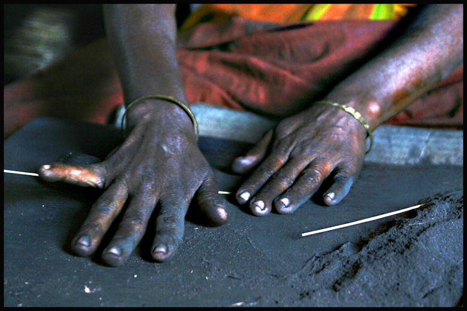

Sanskritkurs

Lösung der Übungen
Übungen
Lektion 54 - 57
von Alois Payer
mailto:payer@payer.de
Zitierweise | cite as:
Payer, Alois <1944 -
>:
Sanskritkurs. -- Lösung der Übungen. -- Übungen Lektion 54 - 57. --
Fassung vom 2009-03-11. -- URL:
http://www.payer.de/sanskritkurs/uebung54.htm
Erstmals hier
publiziert:
2009-03-11
Überarbeitungen:
Anlass:
Lehrveranstaltungen 1980 - 1984
©opyright: Dieser Text steht der
Allgemeinheit zur Verfügung. Eine Verwertung in Publikationen, die über übliche
Zitate hinausgeht, bedarf der ausdrücklichen Genehmigung des Verfassers
Dieser Text ist Teil der
Abteilung Sanskrit von Tüpfli's Global Village Library
Falls Sie die diakritischen
Zeichen nicht dargestellt bekommen, installieren Sie eine Schrift mit Diakritika
wie z.B. Tahoma.
Die Devanāgarī-Zeichen sind
in Unicode kodiert. Sie benötigen also eine Unicode-Devanāgarī-Schrift.
Übung Lektion 54
Übersetzen Sie schriftlich folgende Formen und bilden
Sie die entsprechenden Aoristformen:
- यन्ति sie
gehen - अगुः
- पिबामि
ich trinke - अपाम्
- ददौ ich habe / er hat
gegeben - अदाम् । अदात्
- बभूव ich / er / ihr
war / wart - अभूवम् । अभूत् । अभूत
- दधति sie setzen -
अधुः
- ऐम wir gingen - अगाम
- पपिथ du hast
getrunken / du hast geschützt - अपाः (nur zu पा 1 "trinken")
- तिष्ठति
er steht - अस्थात्
- इयेथ du bist
gegangen - अगाः
- पप ihr habt getrunken - अपात
- एष्यथ ihr
werdet gehen - अगात
- तस्थुः sie standen -
अस्थुः
- अधत्त ihr
setztet - अधात
- अददाः du
gabst - अदाः
- अभवन् sie
waren - अभूवन्
- ददिम wir haben
gegeben - अदाम
- भिद्यते
es wird gespalten - अभेदि
- उद्यते
es wird gesagt - अवादि
- स्तूयते
er wird gelobt - अस्तावि
- कृष्यते
es wird gezogen / gepflügt - अकर्षि
- जायते (Pass.)
er wird geboren - अजनि
- गीयते es wird
gesungen - अगायि
- गम्यते
es wird gegangen -अगामि
Abb.: अगायि ॥
Darjeeling -
দার্জিলিং
[Bildquelle: judepics. --
http://www.flickr.com/photos/judepics/2955447474/. -- Zugriff am 2009-03-11.
-- Creative Commons
Lizenz (Namensnennung)]
Übung Lektion 55
Bestimmen und übersetzen Sie schriftlich folgende
formen und bilden Sie die entsprechenden Formen des a-Aorist:
- दोक्ष्यन्ति
- दुष् 4P 3.pl.Fut.P sie werden verderben - अदुषन्
- बुबोध - बुध्
1U 1.3.sg.Perf.P ich / er erwachte - अबुधम् । अबुधत्
- क्रुध्यसि
- क्रुध् 4P 2.sg.Ind.Präs.P du zürnst -
अक्रुधः
- तोक्ष्यथ
- तुष् 4P 2.pl.Fut.P ihr werdet zufrieden sein -
अतुषत
- कुप्यामः
- कुप् 4P 1.pl.Ind.Präs.P wir zürnen - अकुपाम
- आप - आप् 5P 1.3.sg.2.pl.Perf.P
ich / er / ihr erlangte / erlangtet - आपम् । आपत् । आपत
- जग्मुः
- गम् 1P 3.pl.Perf.P sie gingen - अगमन्
- छेत्स्यसि
- छिद् 7U 2.sg.Fut.P du wirst abschneiden - अच्छिदः
- पश्यथ - दृश्
4P 2.pl.Ind.Präs.P ihr seht - अदर्शत
- ध्रोक्ष्यामि
- द्रुह् 4P 1.sg.Fut.P ich werde schädigen
- अद्रुहम्
- नेश - नश् 4P 2.pl.Perf.P
ihr gingt verloren -अनशत
- भिन्त्थ
- भिद् 7U 2.pl.Ind.Präs.P ihr spaltet - अभिदत
- भ्राम्यामः
- भ्रम् 4P 1.pl.Ind.Präs.P wir irren umher -
अभ्रमाम
- मुन्चति - मुच् 6U
2.sg.Ind.Präs.P er lässt los - अमुचत्
- मुह्यसि
- मुह् 4P 2.sg.Ind.Präs.P du irrst - अमुहः
- अरोदीत्
- रुद् 2P 3.sg.Impf.P er heulte - अरुदत्
- रुरोधिथ
- रुध् 7U 2.sg.Perf.P du stopptest - अरुधः
- श्राम्यन्ति
- श्रम् 4P 3.pl.Ind.Präs.P sie mühen sich ab -
अश्रमन्
- विन्दथ
- विद् 6U 2.pl.Ind.Präs.P ihr findet - अविदत
- असीदन्
-सद् 1P 3.pl.Impf.P sie saßen - असदन्
- वर्तामहे (a-Aor.: P)
- वृत् 1Ā 1.pl.Ind.Präs.Ā wir befinden uns - अवृताम
- अशात् - शास् 2P
3.sg.Impf.P er befahl - अशिषत्
- सेक्ष्यसे
- शिच् 6U 2.sg.Fut.Ā du wirst im eigenen Interesse beträufeln - असिचथाः
- अयुनक्
- युज् 7U 2.3.sg.Impf.P du hast / er hat angeschirrt
- अयुजः । अयुजत्
- आरिथ - ऋ 3P
2.sg.Perf.P du bist gegangen - आरः
- अक्लिद्यन्
- क्लिद् 4P 3.pl.Impf.P sie wurden
feucht - अक्लिदन्
- अजीर्यम् (Aor.: hochstufig)
- जॄ 4P 1.sg.Impf.P ich alterte - अजरम्
- लुम्पति
- लुप् 6U 3.sg.Ind.Präs.P er bricht - अलुपत्
- अशाम्यत
- शम् 4P 2.pl.Impf.P ihr wurdet ruhig - अशमत
- अशोभथाः (a-Aor.: P)
- शुभ् 1Ā 2.sg.Impf.Ā du warst schön - अशुभः
- अशुष्याम
- शुष् 4P 1.pl.Impf.P wir wurden trocken - अशुषाम
- सिष्णेह
- स्निह् 4P 1.3.sg.Perf.P ich / er
liebte - अस्निहम् । अस्निहत्
Abb.: अशोभथाः
। अशुभः ॥
[Bildquelle: said&done. --
http://www.flickr.com/photos/faraz27989/245321480/. -- Zugriff am
2009-03-11. --
Creative Commons Lizenz (Namensnennung)]
Übung Lektion 56
A) Bestimmen und übersetzen Sie ohne Hilfsmittel (!)
folgende Formen:
- अस्मत् -
वयम् Abl. von uns
- अस्मात्
- इदम् 3 Abl.sg.m.n. von diesem
- दध्यौ - ध्यै 1P
1.3.sg.Perf.P ich habe / er hat gedacht
- लिल्यिरे
- ली 4Ā 3.pl.Perf.Ā sie haben sich angeschmiegt
- अगामि - गम् 1P
3.sg.Aor.Pass. es wurde gegangen
- आगामी - आगामिन् 3
Nom.sg.m der zu kommen pflegt
- अक्लिद्यत्
- क्लिद् 4P 3.sg.Impf.P er wurde feucht
- अक्लिदत्
- क्लिद् 4P 3.sg.Aor(2).P er wurde feucht
- अचिक्लिदत्
- क्लिद् 4P 3.sg.Aor(3)P.Kaus er machte feucht
- स्त्रीघ्नाय
- स्त्रीघ्न 3 Dat.sg.m.n. dem Frauenmörder
- नेद - नद् 1P 2.pl.Perf.P ihr
brülltet
- प्लवमान
- प्लु 1Ā vok.sg.m.Part.Präs.Ā Schwimmer!
- अकारि - कृ 8U
3.sg.Aor.Pass es wurde getan
- अद्य - Adv. heute
- अतन्द्रिते
- अतन्द्रित 3 unermüdlich Lok.sg.m.n.Nom.Akk.Vok.du.n.Vok.sg.f.
- अन्तरे -
अन्तर 3 ein anderer Nom.Vok.m.pl.Lok.sg.m.Nom.Akk.du.n.
- महीक्षितम्
- महीक्षित् m. Akk.sg.m den König ; मही + ईक्षित 3 von der Erde (aus)
gesehen Akk.sg.m.n.Nom.sg.n.
- आर्दिधाम
- ऋध् 5P 1.pl.Aor(3).P.Kaus wir ließen gedeihen
- आसम् - अस् 2P
1.sg.Impf.P ich war
- आसाम् - इदम् 3
Gen.pl.f. dieser
- आसि - आस् 2Ā 1.sg.Impf.Ā ich
saß
- अनूनुदत्
- नुद् 6U 2.pl.Aor(3).P.Kaus ihr habt fortstoßen lassen
- जिघ्रति
- घ्रा 1P 3.sg.Ind.Präs.P er riecht
- जाग्रति
- जागृ 2P 3.pl.Ind.Präs.P sie wachen
- आस्थत् -
अस् 4P 3.sg.Aor(2).P er warf
- आस्थात्
- आ-स्था 1P 3.sg.Aor(1).P er trat an
- अबीभषम्
- भाष् 1Ā 1.sg.Aor(3).P.Kaus ich ließ sprechen
- अशुषः - शुष् 4P
2.sg.Aor(2).P du bist getrocknet
- कपी - कपि m. Nom.Akk.Vok.du.
zwei Affen
- आततायी -
आततायिन् m. Nom.sg. der Schwerverbrecher
- महती - महान्त् 3 groß
Nom.sg.f.Nom.Akk.Vok.du.n
- इतरेतरेषाम्
- इतरेतर 3 gegenseitig Gen.pl.m.n.
- धेक्षि -
दिह् 2U 2.sg.Ind.Präs.P du bestreichst
- अश्यन् -शो
4P 3.sg.Impf.P sie schärften
- कन्ये - कन्या f.
Mädchen Vok.sg.Noma.Akk.Vok.du
- सौमि - सु 2P
1.sg.Ind.präs.P ich pflanze mich fort
- आर्पिपन्
- ऋ 1P 3.pl.Aor(3).P.Kaus sie setzten in Bewegung
- परिव्राट्
- परिव्राज् m. Wandermönch Nom.Vok.sg.
- जेरिम - जॄ 4/9P
1.pl.Perf.P wir alterten
- अततर्पत
- तृप् 4/6P 2.pl.P.3.sg.Ā.Aor(3)Kaus. ihr habt / er hat gesättigt
- तत्रिरे
- त्रै 1Ā 3.pl.Perf.Ā sie retteten
- मात्रीकुरु
- मात्रीकृ 2.sg.Imperativ.P mache zur Mutter (मातृ) ; mache zum Maß (मात्रा)
- आनीः - अन् 2P
2.sg.Impf.P du hast geatmet
- मानुषाभ्याम्
- मानुष 3 menschlich Instr.Dat.Abl.du.m.n.
- अजिघ्रपम्
- घ्रा 1P 1.sg.Aor(3).P.Kaus. ich ließ riechen
- रते - रम् 1Ā PPP erfreut
Lok.sg.m.n.Nom.Akk.Vok.du.n.Vok.sg.f.
- जातु Adv. überhaupt
- जाती - जाति f.
Nom.Akk.Vok.du zwei Geburten
- जाता - जन् 1Ā PPP
Nom.sg.f. die geborene
- अपरस्मै
-अपर 3 Dat.sg.m.n. einem anderen
- अदीपि - दीप् 4Ā
3.sg.Aor.Pass es wurde geflammt
- अजूजुषाम
- जुष् 6Ā 1.pl.Aor(3).P.Kaus wir haben befriedigt
- नवानाम्
- नव neun / नव 3 neu Gen.pl.m.f.n.
- अश्रुणोः
- अश्रु n. Gen.Lok.du zweier Tränen / in zwei Tränen
- पृथक्पृथक्
Adv. je einzeln
- असिष्णिहम्
- स्निह् 4P 1.sg.Aor(3).P.Kaus ich habe eingefettet
- मन्मय्यः
- मन्मय 3 Nom.pl.f. die aus mir bestehenden
- औजिहः - ऊह् 1Ā
2.sg.Aor(3).P.Kaus. du hast schieben lassen
- अशिनट् -
शिष् 7P 3.3.sg.Impf.P du hast / er hat übrig gelassen
- पाप्यभूवन्
- पापीभू cvi 3pl.Aor(1)P sie sind schlecht geworden
- शोत्स्यामः
- शुध् 4P 1.pl.Fut.P wir werden reinigen
- अदीर्यथाः
- दॄ 9L 2.sg.Impf.Pass du wurdest gespalten
- भस्मसात्संपेदे
- भस्मसात्सम्पद् 4Ā 1.3.sg.Perf.Ā ich / er wurde völlig zu Asche
- नवधा Adv. neunfach
- अविनक् -
विज् 7P 2.3.sg.Impf.P du hast / er hat gezittert
- आन - अन् 2P 1.3.sg.2.pl.Perf.P ich
habe / ... geatmet
- शान्तयोः
- शम् 4P PPP ruhige Gen.Lok.du.m.f.n.
- वारीणि -
वारि n. Nom.Akk.Vok.pl die Wasser
- वारिणी -
वारि n. Nom.Akk.Vok.du die beiden Wasser
- वारिणि -
वारि n. Lok.sg. im Wasser
- अद्भिः -
आप् । अप् f. Instr.pl. durch die Wasser / durch das Wasser
- अदिध्मपन्
- ध्मा 1P 3.pl.Aor(3).P.Kaus. sie ließen blasen
- अववर्जन्
- वृज् 7P 3.pl.Aor(3).P.Kaus sie vermieden
- शितवत्यौ
- शो 4P Nom.Akk.Vok.f.du.PartPerfP (auf -vant) zwei, die geschärft haben
- अहो Interjektion ach wehe
- एकशः Adv. je einer,
einzeln
- अपप्तः -
पत् 1P 2.sg.Aor(3).P du bist geflogen
- अकस्मात्
Adv. unerwartet
- मित्रध्रुक्
- मित्रद्रुह् 3 Feindeschädiger Nom.Vok.sg.m.f.n. (neben मित्रद्रुट्)
- अवोचन् -
वच् 2p 3.pl.Aor(3).P sie sprachen
Abb.: जेरिम
Darjeeling -
দার্জিলিং
[Bildquelle: doug.deep. --
http://www.flickr.com/photos/douga/2307213646/. -- Zugriff am 2009-03-11. --
Creative Commons
Lizenz (Namensnennung, keine kommerzielle Nutzung)]
Übung Lektion 57
Auflösung ohne Anspruch auf Vollständigkeit!
A) Übersetzen und bestimmen Sie ohne Hilfsmittel
folgende Formen und bilden Sie die entsprechenden Aoristformen. Außer bei
Kausativen und Wurzeln, die den s-Aorist bilden, ist in Klammer die Klasse des
entsprechenden Aorists angegeben:
- पेचिथ - पच् 1U
2.sg.P.Perf du gartest - अपाक्षीः
- अवक् (३) - वच् 2P
2.3.sg.P.Imp du sprachst / er sprach - अवोचः । अवोचत्
- सोष्यसि
- सु 1/2P 2.sg.Fut.P du wirst dich fortpflanzen - असौषीः
- छिन्दे -
छिद् 7U 1.sg.Ind.Präs.Ā ich schneide ab - अच्छित्सि
- कुरुषे - कृ
8U 2.sg.Ind.Päs.Ā du tust im eigenen Interesse - अकृथाः
- आधत्ते -
आ-धा 3Ā 3.sg.Ind.Präs.Ā du setzst hin - आधित
- पद्यते -
पद् 4Ā 3.sg.Ind.Präs.Ā er geht - अपादि
- जिगाय - जि 1P
1.3.sg.Perf.P ich / er siegte - अजैषीत्
- जिघ्रामः (१,६)
- घ्रा 1P 1.pl.Ind.Präs.P wir riechen - अघ्रास्म । अघ्राम
- शासति (२) -
शास् 2P 3.pl.Ind.Präs.P sie befehlen - अशिषन्
- स्तुवे -
स्तु 2U 1.sg.Ind.Präs.Ā ich preise in meinem Interesse - अस्तोषि
- दिग्धे -
दिह् 2U 3.sg.Ind.Präs.Ā er bestreicht im eigenen Interesse - अदिग्ध
- प्लवध्वे
- प्लु 1Ā 2.pl.Ind.Präs.Ā ihr schwimmt - अप्लोढ्वम्
- तस्थिथ (१)
- स्था 1P 2.sg.Perf.P du standest - अस्थाः
- बिभ्यति
- भी 3P 3.pl.Ind.Präs.P sie fürchten - अभैषुः
- ततर्प - तृप् 4/6P
1.3.Perf.P ich / er sättigte mich - अतार्प्सम् । अत्राप्सम् । अतार्प्सीत् ।
अत्राप्सीत्
- जुहुथ - हु 3P
2.pl.Ind.Präs.P ihr gießt ins Opferfeuer - अहौष्ट
- ऊषुः - वस् 1P
3.pl.Perf.P sie wohnten - अवात्सुर्
- ससर्जिथ
- सृज् 6P 2.sg.Perf.P du hast erschaffen - अस्राक्षीः
- लिल्यिरे
- ली 4Ā 3.pl.Perf.Ā sie haben sich angeschmiegt - अलेषत । अलासत
- अत्याजयम्
- त्यज् 1P 1.sg.Impf.P.Kaus ich ließ verlassen - अतित्यजम्
- सिध्यथ (२)
- सिध् 4P 2.pl.Ind.Präs.P ihr seid ans Ziel gekommen - असिधत
- निन्य - नी 1U
2.pl.Perf.P ihr habt geführt - अनैष्ट
- कर्षन्ति
- कृष् 1P 3.pl.Ind.Präs.P sie ziehen - अकार्क्षुः । अक्राक्षुः
- अप्रच्छयन्
- प्रच्छ् 6P 3.pl.Impf.P.Kaus. sie ließen fragen - अपप्रच्छन्
Abb.: वारानास्यां गङ्गायामप्लोढ्वम्
[Bildquelle: juicyrai. --
http://www.flickr.com/photos/wink/184339799/. -- Zugriff am 2009-03-11. --
Creative
Commons Lizenz (Namensnennung, keine kommerzielle Nuttzung, share alike)]
B) Übersetzen und bestimmen Sie folgende Formen:
- चेलुः - चल्
1P 3.pl.Perf.P sie sind in Bewegung geraten
- जन्तुः
- जन्तु m. Nom.sg. das Geschöpf, die Leute
- अश्वसीत्
- श्वस् 2P 3.sg.Impf.P er blies
- ज्येष्ठायाः
- ज्येष्ठ 3 Gen.Abl.sg.f. (von) der besten / der ältesten
- संयक् - Adv.
richtig
- असे - असि m. Vok.sg.
Schwert!
- असि - अस् 2P
2.sg.Ind.Präs.P du bist
- अचैष्ट - चि 5U
3.sg.Aor(4).Ā er hat im eigenen Interesse aufgeschichtet
- अचेष्ट - चि
- अभग्नम्
अ + PPP von भञ्ज् 7P Nom.Akk.sg.n.Akks.sg.m. das unzerbrochene / den
unzerbrochenen
- भस्म - भस्मन् n.
Nom.Akk.sg.n. die Asche
- हवींषि
- हविस् n. Nom.Akk.Vok.pl. die Opfergabe
- अद्राक्षीः
- दृश् 4P 2.sg.Aor(4).P du sahst
- शनैः - Adv.
langsam, allmählich
- अपन्थाः
- अ-पथ् m. Nom.,Vok.sg. der Nicht-Weg, der Unweg
- शत्रुह
- शत्रुहन् 3 Nom.Akk.sg.n. das Feinde-tötende
- उदासीने
- उदासीन 3 indifferent Lok.sg.m.n.Vok.sg.f.Nom.Akk.Vok.du.n.f.
- कनीयान्
- Nom.sg.m.Komparativ der kleinere
- कन्याम्
- कन्या f. Akk.sg. das Mädchen
- आरम् - ऋ 1/9P
1.sg.Aor(2)P ich ging
- रिपू - रिपु m.
Nom.Akk.Vok.du. die beiden Betrüger / Feinde
- अदात् - दा 3U
3.sg.Aor(1).P er gab
- आदत् -अद् 2P
3.sg.Impf.P er aß
- अवोढ - वह् 1U
3.sg.Aor(4).Ā er fuhr im eigenen Interesse ; PPP zu अव-वह् Vok.Sg.m.n.
Herabgeführter!
- अवोचम्
- वच् 2P 1.sg.Aor(3).P ich sprach
- दिक् - दिश् f.
Nom.sg. die Richtung / Gegend
- शुनोः - श्वन्
m. Gen.Lok.du. der / in den beiden Hunde(n)
- यते - यति m. Vok.sg.
Asket! ; PPP zu यम् 1P Lok.sg.m.n.Vok.sg.f.Nom.Akkk.Vok.du.n.f. gehalten ;
यत् 1Ā 1.sg.Ind.Präs.Ā ich strebe ; Part.Präs.P zu इ 2P Dat.sg.m.n. dem
gehenden
- येते - यत् 1Ā
1.3.sg.Perf.Ā ich / er strebte
- याते - PPP zu या 2P
gegangen Lok.sg.m.n.Vok.sg.f.Nom.Akk.Vok.du.n.f. ; PartPräsP zu या 2P
Dat.sg.m.n. dem gehenden
- चतस्रः
- चतुर् 3 Nom.Akk,Vok.pl.f. vier
- परंपरायै
- परंपरा f. Dat.sg. der Sukzession
- विमलाभ्याम्
- विमल 3 Instr.Dat.Abl.du.m.f.n. durch die schmutzfreien / ...
- ते - त्वम् Dat.Gen.enklit. dir
/ dein ; तद् 3 dieses Nom.pl.m.Nom.Akk.du.f.n.
- रजसि - रजस् n.
Lok.sg.n. in der Helle
- रजसी - रजस् n.
Nom.Akk.Vok.du. die beiden Hellen
- विक्रेढ्वम्
- वि-क्री 9Ā 2.pl.Ā.Injunktiv.Aor(4) verkauft [+ मा nicht]
- युष्मत्
- युष्मद् Abl.pl. von euch
- अघम् - अघ n.
Nom.Akk.Vok.sg. das Übel ; अघ 3 Akk.sg.m. den Bösen
- अभुक्थाः
- भुज् 7U 2.sg.Aor(4).Ā du hast im eigenen Interesse gegessen
- उत्थानाय
- उत्थान n. Dat.sg. dem Aufstehen
- अलुम्पत
- लुप् 6U 2.pl.Impf.P3.sg.Impf.Ā ihr zerbracht / er zerbrach im eigenen
Interesse
- अलुपत - लुप्
6U 2.pl.Aor(2).P ihr zerbracht
- अलुप्त
- लुप् 6U 3.sg.Aor(4).Ā er zerbrach im eigenen Interesse ; अ + PPP zu
लुप् 6U Vok.sg. Ungebrochener!
- अलुप्तम्
- अ + PPP लुप् Nom.Akk.sg.n.Akk.sg.m. dem Ungebrochenen / das Ungebrochene
- वसिष्ठे
- Superl. zu वसुमन्त् 3 Lok.sg.m.n.Vok.sg.f.Nom.Akk.Vok.du.n.f. im reichsten
/ ...
- वर्षिष्ठे
- Superl. zu वृद्ध 3 Lok.sg.m.n.Vok.sg.f.Nom.Akk.Vok.du.n.f. im ältesten /
...
- अक्षैष्म
- क्षि 1/5/9P 1.pl.Aor(4).P wir vernichteten
- अहृत - हृ 1U
3.sg.Aor(4/1).Ā er hielt ; अ + PPP zu हृ 1U Vok.sg.m.n. Ungehaltener!
- कामधुग्भिः
- कामदुह् f. Instr.pl. durch Wunschkühe
- अमुत्र
- Adv. dort
- पत्युः
- पति m. Abl.Gen. des Gatten / von dem Gatten
- क्षेपीयन्
- Komparativ zu क्षिप्र 3 Vok.sg.m. Sehr Schneller!
- आदि्षि
- आ-दा 3Ā 1.sg.Aor(4).Ā ich nahm
- पाणी - पाणि m.
Nom.Akk.Vok.du. beide Hände
- अस्प्राक्षम्
- स्पृश् 6P 1.sg.Aor(4).P ich berührte

Abb.: पाणी धूपं कुरुतः ॥
Mysuru = ಮೈಸೂರು
[Bildquelle: Jonathan
Camuzo.
--
http://www.flickr.com/photos/jonathancamuzo/2870689892/. -- Zugriff am
2009-03-11. --
Creative
Commons Lizenz (Namensnennung, keine kommerzielle Nutzung, keine
Bearbeitung)]
Zur Lösung der Übungen 58
- 60